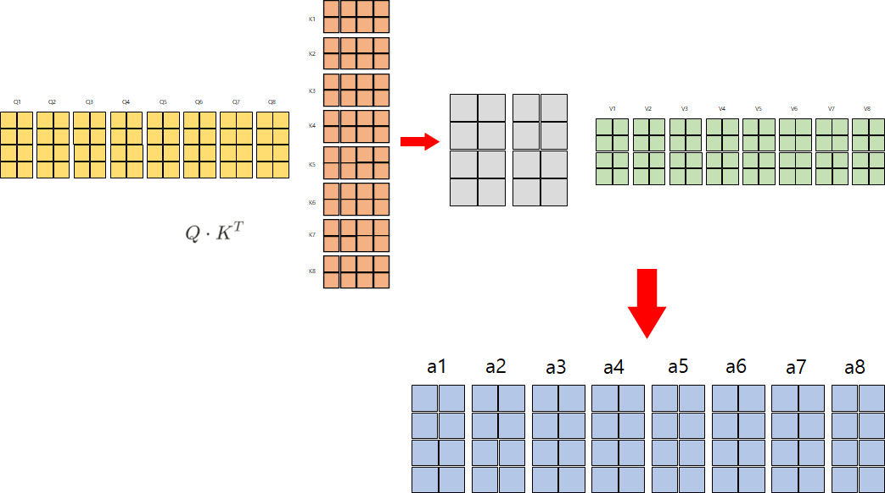
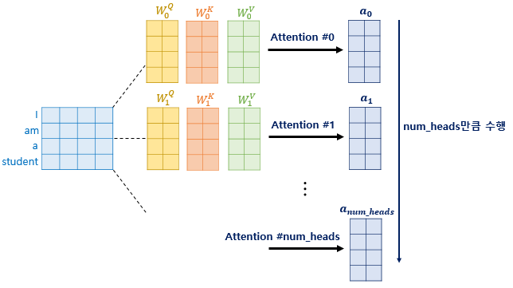
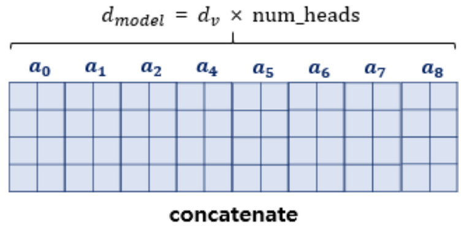

Q&A
Contents
Q&A#
inductive bias 관련 질문#
Q. inductive bias에서 약하다, 강하다라는 의미가 제대로 와닿지 않습니다. 그래서 inductive bias가 부족하다는것이 결국 좋은건지 안좋은건지 궁금합니다.
제가 이해하기론 inductive bias가 강하면 비교적 적은 데이터로 학습이 가능하지만, 학습이 빠르게 saturation 되어 데이터를 더 추가하더라도 학습이 진행되지 않고 Overfitting이 발생할 수 있다라고 이해했습니다. 반면에 Inductive bias가 없다면 추가적 가정을 대체하기 위해서 더 많은 데이터가 필요합니다. 하지만 학습이 쉽게 saturation되지 않고 Overfitting이 발생할 가능성이 낮다라고 이해했습니다. 따라서 각각의 장단점이 있다라고 생각합니다.
음… 제가 이해한 inductive bias는 약간 다른데요. inductive bias가 강하다는 것은 학습 데이터 이외의 데이터에서도 좋은 성능을 보인다는 것이고 inductive bias가 약하다는 것은 학습 데이터에서만 좋은 성능을 보이고 이외의 데이터에서는 낮은 성능을 보인다는 것으로 이해했습니다.
그리고 Inductive Bias가 약하다는 것은 학습 데이터에만 좋은 성능을 보인다는 것인데 이것은 overfitting이 될 가능성이 높다는 것이고 Inductive Bias가 강하면 학습 이외의 데이터에서도 좋은 성능을 보일 수 있기 때문에 overfitting이 발생할 가능성이 낮을 것 같습니다.
Inductive Bias 강하다 → overfitting x Inductive Bias 약하다 → overfitting o
저도 자세히는 모르지만 알고 있는 선에서 의견 나눠봅니다!
inductive bias란 모델의 일반화 성능을 높이기 위해 학습 시 사용하는 추가적인 가정이라고 할 수 있습니다. 이는 어떤 특정 유형의 가정이 아니라 모델 아키텍처를 수정하는 것(depth, width, resolution), 학습 시 사용하는 regularization, normalization뿐만 아니라 data augmentation 등도 해당됩니다. 결국 이러한 테크닉(?)을 사용하는 것은 모델이 데이터의 feature를 잘 추출하도록 representation power를 높여 train data뿐만 아니라 test data에 대해서도 좋은 예측을 할 수 있도록 일반화 성능을 높이는 것이 목적입니다.
이미지에서 멀리 떨어진 pixel들 보다는 인접한 pixel간에 가지고 정보가 좀 더 중요하다고 볼 수 있습니다. 이미 CNN은 이러한 local feature를 잘 추출할 수 있도록 설계되어 있습니다. 또한 rotation, translation에 invariance하다는 특징이 있습니다. 데이터가 rotation되더라도 큰 문제 없이 feature를 잘 뽑아내고 어떤 이미지인지 분류할 수 있으므로 inductive bias가 강합니다. 반대로 transformer는 global feature를 효과적으로 추출하지만 inductive bias가 CNN보다는 약합니다. 그래서 학습 데이터에 rotation 되거나 translation되어 있는 샘플들이 많이 있어야 합니다. 그래서 transformer는 large scale dataset이 필요하게 됩니다.
inductive bias가 약한 것, 강한 것 중에 어느 것이 더 좋다고 말하긴 어려워 보입니다. 저는 trade-off라고 생각이 드는데 내가 풀고자 하는 문제와 가지고 있는 데이터셋을 잘 분석해서 판단해야 한다고 봅니다. 데이터셋이 충분히 크다면 inductive bias가 약한 transformer를 사용해볼 수 있겠고 반대로 데이터셋이 충분하지 않다면 inductive bias가 강한 모델을 사용할 수 있다고 봅니다.
inductive bias에 따른 적용 여부#
Q. CNN이 이미지가 locality inductive bias를 고려하여 만들어진 모델이라면, 이미지에서 global한 정보가 더 필요한 경우는 주로 무엇이 있는지 궁금합니다.
다음 사진을 예시로 보면 사진 안에 있는 물체를 볼때 local만 본다면 자동차로 인식할 수 있습니다. 하지만 배경, 산, 강, 호수, 바다 등을 모두 global하게 볼 수 있다면 보트라고 인식할 확률이 높아질 것 같습니다. global하게 본다는 것은 context를 본다고도 말하는 것으로 알고 있습니다.
이미지에 transformer를 사용하면, visual grounding같은 context 측면에서 해결할 수 있는 task들에 강점이 있을 것이라 봐도 괜찮을까요?
네 visual grounding 뿐만 아니라 OCR과 같은 Text 인식 쪽에서도 좋은 성능을 보여주는 것으로 알고 있습니다. 그리고 context를 보는 것은 웬만한 모든 task에서 좋은 성능을 가져다주지 않을까요? 그렇기 때문에 transformer가 거의 모든 task에서 SOTA를 달성하였다고 알고 있습니다.
Self-attention에서 Q,K,V 벡터 관련 질문 (입력된 문장의 Q, K, V를 구하는 방법)#
모든 문장의 Q, K, V 벡터가 같다면 아래의 코드처럼 나타내면 되는 것인가요?
class QKVExtraction(nn.Module):
def __init__(input_ch, output_ch):
super().__init__()
self.Q = nn.Linear(input_ch, output_ch)
self.K = nn.Linear(input_ch, output_ch)
self.V = nn.Linear(input_ch, output_ch)
def forward(x) :
q = self.Q(x)
k = self.K(x)
v = self.V(x)
return q,k,v
위 class를 한번 선언하고 입력되는 모든 값에 대해서 적용해주면 동일한 QKV 벡터를 사용하는 건가요?
ViT에서는 말씀하신 것처럼 self.Q, self.K, self.V를 정의하고 forward에서 x를 넣으면 됩니다. 그런데 Q, K, V를 구하는데 class를 따로 선언할 필요는 없습니다.
그리고 작성해주신 코드처럼 self.Q, self.K, self.V 따로따로 정의해주셔도 되지만 다음과 같이 하나로 정의하고 이후에 나누어주는 방법도 있습니다.
self.qkv = nn.Linear(in_features, out_features * 3)
qkv = self.qkv(x).reshape(B, N, 3, num_heads, dim).permute(2, 0, 3, 1, 4) # 3 x batch x num_heads x length x dim
q, k, v = qkv.unbind(0)
multi-head attention을 진행할 때, num_head 값 만큼 병렬로 진행 하는데, 이 때, output 값에 대해서만 병렬로 처리하는 것인가요?#

위 사진처럼 Q, K, V 벡터를 axis=1을 기준으로 concate하여 연산하는 방법을 말하는 것인지
 
아니면 이렇게 따로 따로 Q, K, V에 대해서 연산 한 후 결과 값 a에 대해서만 concate하여 가중치 행렬 \(W^O\)와 연산하는 것인지 궁금합니다
실제로 코드가 어떻게 구현되어있는지 확인해보면 이해하기 편할 것 같은데요. 예를 들어서 multi-head attention에 input되는 tensor는 다음과 같이 batch x num_head x length x dim 이 됩니다.
tensor = tensor.view(batch_size, length, self.n_head, d_tensor).transpose(1, 2)
q, k, v 각각 위 처럼 head 수 만큼 reshape해주고 이 q, k, v가 attention에 들어갑니다.
out, attention = self.attention(q, k, v)
질문 하신 내용에서는 Q, K, V 벡터를 axis=1을 기준으로 concat하여 연산한다고 말씀하신 것이 맞을 것 같습니다.
ViT에서의 Q, K, V도 마찬가지로 batch x num_head x length x dim 으로 reshape을 해주는데 이때 length는 height x width + 1이 됩니다. +1을 해주는 이유는 cls token이 추가되기 때문에 더해줍니다.
Edit by 김주영